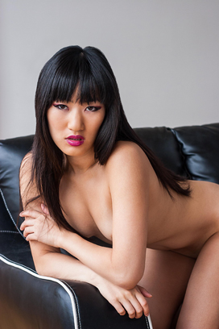
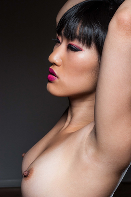
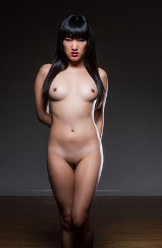
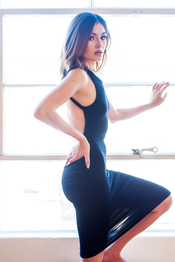
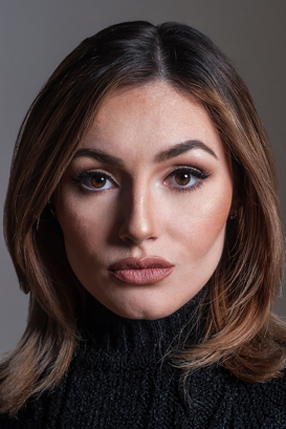
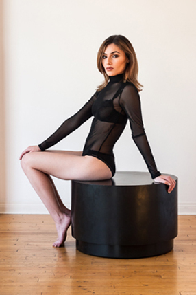

I'm a recent graduate from a Front-End Web Development course at General Assembly, there I learned HTML, CSS, JavaScript, and jQuery and hoq to be an awesome Front-Web Developer. During my spare time, I am a photographer and I shoot artistic nudes, fashion, beauty and glamour, also bands.
These are some my latest images below. At the bottom of this page there is a link to my website.
  This is another one of my latest shots I did of model Blanca Caevero for Maxim.
  